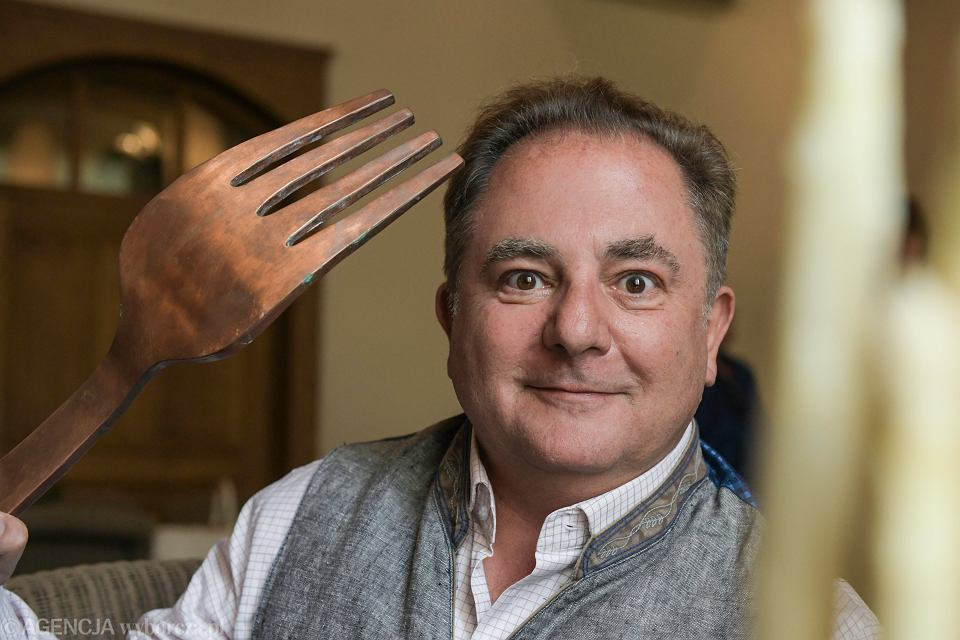

Ogromny widelec
Jak jeść takim ogromnym widelcem? Czy wtedy więcej zjemy? Czy to wygodne? Szczerze to nie mam zielonego pojęcia.
Galeria w całości poświęcona polskiemu kucharzowi, historykowi, podróżnikowi, youtuberowi i inne ...owi. A mowa oczywiście o Robercie Makłowiczu!
Jak jeść takim ogromnym widelcem? Czy wtedy więcej zjemy? Czy to wygodne? Szczerze to nie mam zielonego pojęcia.
Studenci często nie mają otwieraczy. A po co wam otwieracz skoro macie oczy? Tym prostym trikiem otrzymacie otwarte piwko i skierowanie do okulisty.
Czy ktoś kiedyś patrzył jak jesz? Nawiąż z nim kontakt wzrokowy i zniszcz go psychicznie, bo w jedzeniu się nie przeszkadza.
Jesteś spragniony, ale nie wiesz jaką szklankę wybrać do piwa? Oczywiście taką, w której widać twoje piękne odbicie. Można patrzeć godzinami!
Rozpoznawalność czasem może przytłoczyć. W takim wypadku najlepszym rozwiązaniem jest zapuścić bujne wąsy. Od razu jest się innym człowiekiem.
Czy twój piesek jest głodny? Nie dawaj mu jeść! Zamiast tego naucz go gotować, a przyrządzi jedzenie dla siebie i dla całej twojej rodziny.
Po lewej Makłowicz, po prawej Makłowicz, a na środku nie kto inny jak Makłowicz. Tak, to właśnie kulinarna rodzina Makłowiczów.
"Kiedyś nic nie było a wszystko było. Teraz wszystko jest, a nic nie ma." Często człowiek nie wie co wybrać do jedzenia. Po co wybierać? Najlepiej zjeść wszystko.
Od tysiącleci było wiadomo, że ryba jest najlepszym przyjacielem człowieka. Dlaczego? To proste, ryba nigdy nie ucieknie.
Witaj na mojej stronie! Jestem wielkim fanem Roberta Makłowicza, znanego kucharza i podróżnika, który zainspirował mnie do eksplorowania kuchni i kultur na całym świecie.
Od najmłodszych lat interesowałem się jedzeniem i gotowaniem, ale to Makłowicz pokazał mi, jak wiele możliwości oferuje kulinarna podróż. Jego programy telewizyjne, książki i artykuły zainspirowały mnie do odkrywania nowych smaków, aromatów i technik gotowania.
Dzięki Robertowi Makłowiczowi, nauczyłem się, że gotowanie to nie tylko sposób na przygotowanie posiłku, ale także sposób na odkrywanie nowych kultur i tradycji. Jego pasja do podróży i poznawania świata sprawiła, że zawsze staram się łączyć kulinarną eksplorację z podróżami.
Dzięki Robertowi Makłowiczowi, moja pasja do gotowania i podróżowania jest nie tylko sposobem na zaspokojenie mojego apetytu, ale także sposobem na odkrywanie nowych kultur i smaków. Mam nadzieję, że moja strona będzie dla Ciebie źródłem inspiracji do odkrywania kulinarnej podróży.
Adres: Randomowa 21/37, 01-234 Warszawa
Telefon: 123-456-678
E-mail: fajny.mail@gmail.com